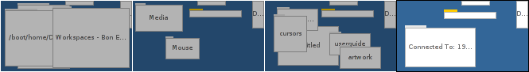

Workspaces (Робочі області)
Робочі області – це віртуальні робочі столи з власною роздільною здатністю, глибиною кольору і фоном. Панель налаштувань Screen (Екран) дає можливість встановити до 32-х таких робочих областей.

 Перемикання між робочими областями
Перемикання між робочими областями
Ви можете переходити від однієї робочої області до іншої натиснувши на екран в аплеті Workspaces (Робочі області) (як показано на зображенні вище) або скориставшись комбінацією клавіш ALT Fx, де «x» є номером області (екрану). Гарною ідеєю буде розмістити робочі області по чотири в ряд, щоб імітувати розташування клавіш Fx на клавіатурі.
Крім того, зробивши клік на програмі або одному з її вікон на панелі задач, Ви потрапите до робочої області, в якій вона знаходиться.
Ще одним, дуже зручним способом є використання CTRL ALT ←/→/↑/↓ для навігації рядками/стовпцями доступних робочих областей. Якщо додатково утримувати клавішу SHIFT, то активне вікно переміститься разом з Вами до нової робочої області.
Ви можете перемикатися між двома робочими областями за допомогою комбінації ALT ` (фактична клавіша залежить від розкладки клавіш, яку Ви використовуєте – це клавіша розташована нижче ESC). Знову ж таки, утримування клавіші SHIFT дозволить Вам «тягати» активне вікно з собою.